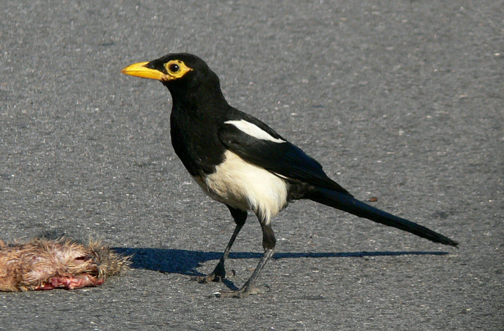

Pica - visi receptai | Maistas | 15min.lt
- Pagrindiniai patiekalai: Picos - 1000receptų.lt
Maža pica 5,5 €, didelė pica 7,2 € Su lašiša Pomidorų padažas, sūris, rūkyta lašiša, rikotos sūris, kaparėliai, šviežios citrinos sultys, ypatingi prieskoniai - JALAPENO.LT - Tikriausiai skaniausia pica mieste!
Skaniausia pica į namus Vilniuje tik nuo 5,99 €. Firminės picos, picos su mėsa, vištiena, krevetėmis, tunu, o taip pat vegetariškos picos. Mėsainiai, užkandžiai ir gėrimai į namus. Skambinkite +370 (614) 44 454! - Pizza Spot Šakiai | Skaniausios picos Šakiuose!
Pica į namus - nelik alkanas ir užsisakyk dabar. Jei užsisakai ne mažiau kaip už 8.4 € - picos pristatymas Tau nieko nekainuos. - Jurgittos receptai: Pica su tunu
Picerija Šakiuose "Pizza Spot Šakiai" siūlo paragauti skaniausių itališkų picų. Mus rasite adresu: V. Kudirkos g. 53, Šakiai. Tel. užsakymams: (8-666) 06005 - Pica - visi receptai | Maistas | 15min.lt
Nors pica nėra laikoma pusryčių patiekalu, tačiau, radus tinkamus ingredientus, ji puikiai tiks ir rytui. Pusryčiams galite pasigaminti ne tik skanios, bet ir sveikos picos iš morkų. Pakeiskite klasikinius ingredientus šiomis daržovėmis ir būsite nustebinti rezultatu. - naminė pica | La Maistas
Pica į namus vilniaus rajone ir vilniuje. Pica su kumpiu, šonine, malta mėsa, vištiena, krevetėmis ir vegetariška. - ProfPizza pica į namus
Picos kepamos 32cm ir 42cm, kainos: 32cm - 5 EUR, 42cm - 7.30 € Siūlome pikantišką arba česnakinį padažą, indelio kaina - 0.7 € - PICA-PICA - Amerikietiška PICA
Pica. Iškočiojame 28 cm. skersmens pagrindą, patepame alyvuogių aliejumi, pomidorų padažu. Pabarstome 1/3 tarkuoto sūrio. Išdėliojame tuną, plonais pusžiedžiais pjaustytus svogūnus, pjaustytas pomidorų riekeles, užberiame žirnelių. Ant viršaus barstome likusį sūrį. - Pica į namus, Picos | Cancan.lt
Tikriausiai skaniausia pica mieste! - Pica į namus Vilniuje | PICA PLIUS
Pica su vištiena "Ką turėjom tą sudėjom" Picų padas pagal Beatą Kaimiška pica Sluoksniuotos tešlos pica su sūriu ir pomidorais Pica su grybais Gerdos naminė picutė Pica su kumpiu ir pievagrybiais ...
COVID-19 Rinkimai Tv programa Orai.lt Žiūrėk Klausyk +11° Vilnius +11° Kaunas +12° Klaipėda +10° Šiauliai +10° Panevėžys +11° Alytus +10° Mažeikiai +11° Utena Maistas Naujienos Virtuvė Vieta Interviu Receptai Daugiau Pranešk Prisijungti Redaguoti paskyrą Skaitysiu vėliau Mano naujienos Mano receptai Mano pirkiniai Atsijungti Maistas Naujienos Virtuvė Vieta Interviu Receptai Daugiau Pranešk Prisijungti Redaguoti paskyrą Skaitysiu vėliau Mano naujienos Mano receptai Mano pirkiniai Atsijungti Aktualijos Verslas Sportas Gazas Mokslas.IT Pasaulis kišenėje 24sek Eurolyga Deuce Vardai Gyvenimas Maistas Ar žinai? Esports namai Galerijos Video Projektai Lietuva Užsienis Kriminalai Kultūra Sveikata Švietimas Emigrantai Komentarai Tribūna Gyvūnų klubas Konkursai Rinka Gatvė Sportas Testai saugukelyje.lt Rally Estonia 1006km lenktynės Moto Dream2drive Galerijos Soapbox Race Naujienos Galerijos Video Pasaulio geriausieji Mano tenisas Svarbu Aš manau! Pramogos Fotopolicija Pasiskųsk Keliauju Konkursai Gyvūnai Technologijos Laboratorija Kosmosas Žaidimai Galerijos Kelionių Pulsas Kelionių ekspertas Kelionių istorijos Tavo Roma Per Lietuvą Pasaulis tavo akimis Dienoraščiai Egzotikos kampelis Galerijos Video Finansai Bendrovės Energetika Transportas Verslumas Žemės ūkis Kvadratinis metras Karjera Medijos Pranešimai Startup Krepšinis Futbolas Lengvoji atletika Tenisas Vandens sportas Kovinis sportas Buriavimas Regbis Tenisas Pokeris Autosportas Žiemos sportas Muilas Ekstremalu Kita Politics Opinion Feature Economy Society Tribune ru.15min.lt Eurolyga.lt LKL NBA Kablys Kauno Žalgiris Rytas Galerijos Video Lietuva Europa Pamatyti Ragauti Keliauti Dalyvauti Specialiai jums Renginiai Kinas Teatras Muzika Literatūra Vizualieji menai Kaunas 2022 Kino pavasaris Sirenos Nepatogus kinas Venecijos bienalė 100 Lietuvų Asmenybė Naujienos Patikrinta 15min Rinkimų dalyviai Galerijos Video manoseimas.lt Naujienos Virtuvė Vieta Interviu Receptai Lietuva Pasaulis Muzika Galerijos Video Eurovizija Santykiai Šeima Sveikata Mityba Mada Grožis Namai Laisvalaikis Horoskopai Augintiniai Pokalbiai Piniginė Galerijos Apžvalgos Įdomi Lietuva Įdomus pasaulis Įdomūs klausimai Pasitikrink žinias Nacionalinė viktorina Naujienos Rezultatai / Tvarkaraštis Komandos Turnyrinė lentelė Europos taurė Spėlionė Naujienos PRO Video Mobilieji žaidimai Žaidėjai Žaidimų apžvalga Tribūna Kaip pradėti Industrija Naujausios Skaitomiausios Požiūris Idėjos Gyvenimas Verslas Įvykiai Apie Taisyklės Vardai Aktualu Pasaulis Automobiliai Kriminalai Sportas Įvairūs Autosportas Pasaulis kišenėje Krepšinis Autoavarijos Lietuva Verslas Sportas Gazas Mokslas.IT Pasaulis kišenėje 24sek Deuce Maistas Vardai Gyvenimas Ar žinai? Dalia Grybauskaitė Fotopasakojimai 100 Lietuvų Palaikyk tiesą Patikrinta 15min Pažadų metras Su vėju! Moterys, keitusios Lietuvą Dabar populiaru Kontaktai Reklama Karjera Naudojimosi taisyklės Privatumo politika Autoriai Interesų deklaracijos Akcininkai Etikos kodeksas Receptų paieška Visi receptai Desertai Gėrimai Karštieji patiekalai Salotos ir užkandžiai Sriubos
Pica - visi receptai
1 2 3 4 5Bemielis picos paplotis iš speltos ir grikių miltų 2 asm.
Įprastai picos papločio tešla būna mielinė, ruošiama iš šviesių kvietinių miltų. Pabandykite pasigaminti visai kitokios – bemielės, iš retesnių rūšių miltų.
Žymės: bemielė tešla , pica , grikių miltai , speltų miltai 1 2 3 4 5
Pica traškiu sūrio kraštu 4 asm.
Tinklaraštis „Meyer Maistas“: Svarbiausia yra elastingas, traškus, o kartu ir purus picos padas. Iš esmės šis receptas tinka ir klasikinei picai, tik čia dar dedame ant kraštų sūrio, juos užlenkiame ir taip pasigaminame picą su sūrio kraštu. Jo nedėdami galite pasigaminti ir paprastą picos variantą su šiek tiek mažiau sūrio.
Žymės: sūris , pica , naminė pica 1 2 3 4 5Pica bulviniu padu 2 asm.
Laura ( bulviukose.lt ): Ši pica ne tik skani, bet, jei jums aktualu, dar ir be glitimo. Originaliame receptę rašo, kad picos užteks 2-4 žmonėms. Niekaip – sukertame dviese! Kiti du liktų alkani.
Žymės: Bulvės , pica 1 2 3 4 5Pasakiškai skanus picos vyniotinis 6 asm.
Picą mėgsta daugelis, o jei ji dar naminė, ką tik iškepta, nė gabalėlio nelieka labai greitai. Nustebinkite šeimą ar draugus kiek neįprastu formatu – kepiniu, kuris forma atkartoja vyniotinį, tačiau prapjovus tampa akivaizdu, jog tai pavidalą pakeitusi pica. Tiesa, lengvai prasmukti užsisakant jau iškeptą picą ir ją suvyniojant į ritinį tikrai nepavyks, teks patiems minkyti ir kepti!
Žymės: užkandis , pica , naminė , vakarėliui 1 2 3 4 5Morkų pica 4 asm.
Nors pica nėra laikoma pusryčių patiekalu, tačiau, radus tinkamus ingredientus, ji puikiai tiks ir rytui. Pusryčiams galite pasigaminti ne tik skanios, bet ir sveikos picos iš morkų. Pakeiskite klasikinius ingredientus šiomis daržovėmis ir būsite nustebinti rezultatu.
Žymės: morkos , pica , morka 1 2 3 4 5Klasikinis naminis picos padas 2 asm.
Miltai – picos pado pagrindų pagrindas, juos rinkitės geros kokybės smulkius kvietinius, jei patinka, galite išbandyti ir viso grūdo. Mieles rekomenduojame šviežias, vandenį naudokite drungną (kitaip – vasarošiltį), cukrus reikalingas mielėms prabudinti, o aliejų į tešlą įminkykite pačioje pabaigoje.
Žymės: Itališkai , Itališka , pica , kepiniai 1 2 3 4 5Bulvių pica 2 asm.
Paruošiame padą: bulves nuskuskite, nuplaukite ir sutarkuokite stambia trintuve. Rankomis gerai nuspauskite skystį. Įmuškite kiaušinį, berkite miltus, druską, pipirus ir viską išmaišykite. Įkaitinkite keptuvėje aliejų ir formuokite iš bulvių masės... Žymės: Bulvės , sūris , kiaušiniai , pomidorai , šoninė , pica , miltai , svogūnai , druska , receptai , receptas 1 2 3 4 5Tortilijų pica su kumpiu ir pievagrybiais 2 asm.
Įkaitinkite orkaitę iki 200 ºC temperatūros. Kepimo skardą išklokite kepimo popieriumi. Kol orkaitė kaista, į skardą įtieskite tortilijas. Aptepkite tortilijas šlakeliu alyvuogių aliejaus ir pomidorų pasta. Barstykite tarkuoto kietuojo sūrio,... Žymės: pievagrybiai , sūris , pomidorai , tortilija , mocarela , kumpis , pica , receptai , mocarelos sūris 1 2 3 4 5Vegetariška pica su porais ir špinatais 4 asm.
Tokią sveika valgyti ne tik vegetarams, bet ir vaikams ar kūno linijomis besirūpinančiomis dailiosios lyties atstovėms. Paruošta iš sveiko grūdo miltų, be jokių riebalų ir rūkytos mėsos gaminių, ji yra energijos užtaisas visai dienai.
Žymės: tešla , špinatai , porai , šaldyta tešla , rikota , pica , grietinė , užkandžiai , receptai , parmezano sūris , Brandintas sūris 1 2 3 4 5Itališka pica 4 asm.
Pica Į kambario temperatūros vandenį suberkite cukrų ir mieles, pamaišykite ir palikite keletą minučių ramybėje. Suberkite džiovintus bazilikus, druską ir miltus, minkykite tešlą iki vientisos masės. Ji turi būti šiek tiek lipni. Sufomuokite... Žymės: sūris , pomidorai , kumpis , pica , miltai , mielės , druska , bazilikai , užkandžiai , receptai , cukrus , pomidorų pasta 1 2 3 4 5Plikytas daržovių pyragas 6 asm.
Tešlos ruošimas: Iš nurodytų ingredientų paruoškite lietinių skystumo tešlą: kiaušinius lengvai išplakite šluotele, pagardinkite druska, suberkite miltus - išmaišykite, kad neliktų gumulėlių, tada palengva pilkite pieną vis pamaišydamos (... Žymės: kiaušiniai , porai , pyragas , pica , miltai , baklažanai , Daržovių pyragas , vegetariška pica , receptai , vegetariška 1 2 3 4 5Tradicinis mielinis picos paplotys 3 asm.
Miltus suberkite į dubenį, viduje padarykite duobutę, į ją sudėkite trupintas mieles, suberkite cukrų ir druską, įpilkite 4 šaukštus šilto vandens. Mielių masę lengvai ištrinkite, ant viršaus berkite miltų, dubenį uždenkite ir palikite šiltoje... Žymės: italų , Itališka , pica , miltai , mielės , receptai , mielinė tešla 1 2 3 4 5Bulvių pica 4 asm.
Nuluptas bulves smulkiai sutarkuokite, įberkite prieskonius ir supilkite į riebalais suteptą kepimo formą. Kiaušinius išplakite su grietine bei miltais ir supilkite ant bulvių. Dešrą ir papriką supjaustykite kubeliais ,sutarkuokite sūrį,... Žymės: Bulvės , sūris , kiaušiniai , pica , miltai , paprikos , receptai , dešra 1 2 3 4 5Bulvinių blynų pica 4 asm.
Nuluptas ir nuplautas bulves smulkiai sutarkuokite. Į jas įmaišykite kiaušinius, suberkite prieskonius, pasūdykite. Gerai išmaišykite. Keptuvėje įkaitinkite aliejų ir iškepkite lietinių blynų dydžio blynus. Įdarui kitoje keptuvėje apkepinkite... Žymės: Bulvės , pievagrybiai , sūris , kiaušiniai , pica , paprikos , mairūnas , bynai 1 2 3 4 5Bulvių pica su grybais 4 asm.
Picos pagrindui bulves ir svogūnus sutarkuokite ir sumaišykite su kitais tešlai skirtais produktais. Kepimo skardą patepkite riebalais, supilkite tešlą ir kepkite apie 40 min. 190 laipsnių orkaitėje. Picos įdarui žiedais supjaustykite svogūną,... Žymės: Bulvės , sūris , kiaušiniai , grybai , Avižiniai dribsniai , pica , svogūnai , grietinėlė , receptai 1 2 3 4 5Bemielė pica su cukinijomis ir sūriais 3 asm.
Į gilų dubenį persijokite su kėlimo milteliais bei druska sumaišytus miltus. Supilkite aliejų, trinkite masę švariais pirštais, kol riebalai tolygiai pasiskirstys. Supilkite rūgpienį, suminkykite vidutinio kietumo tešlą (jei pernelyg tiršta, į... Žymės: cukinijos , ožkų pieno sūris , pica , miltai , receptai , čederio sūris , mocarelos sūris 1 2 3 4 5Vaisių pica 5 asm.
PARUOŠKITE TEŠLĄ Įkaitinkite orkaitę iki 180 ºC temperatūros. Dideliame dubenyje išplakite kambario temperatūros sviestą, cukrų, citrinos žievelę ir vanilinį cukrų iki kreminės masės. Įmuškite kiaušinį ir dar kartą išplakite. Įmaišykite pieną.... Žymės: mėlynės , avietės , desertas , pica , Vaisiai , vaikiškas , vaikams , receptai 1 2 3 4 5Picų paplotėliai su kumpiu ir ananasais 4 asm.
Orkaitę įkaitinkite iki 200 laipsnių. Grietinę, kefyrą arba rūgpienį supilkite į dubenį, suberkite druską, supilkite aliejų ir įdėkite kiaušinio trynį. Viską išmaišykite. Suberkite miltus ir užmaišykite tešlą. Uždenkite rankšluosčiu ir palikite 15... Žymės: sūris , kumpis , pica , miltai , ananasai , vaikams , receptai 1 2 3 4 5Pica su kiaušiniais ir žirneliais 3 asm.
1. Į dubenį suberkite mieles, cukrų, supilkite vandenį, viską gerai išmaišykite ir palaukite, kol mielės suputos. 2. Kitame dubenyje sumaišykite su druska persijotus miltus, druską, viduryje suformuokite duobutę, į ją supilkite mieles, aliejų ir už... Žymės: kiaušiniai , pica , Žirneliai , mielės , receptai , pomidorų pasta 1 2 3 4 5Pica su ožkų sūriu ir karamelizuotais svogūnais 3 asm.
1. Pirmiausia paruoškite picos padą: miltus suberkite į dubenį, viduje padarykite duobutę, į ją sudėkite trupintas mieles, suberkite cukrų ir druską, įpilkite 4 šaukštus šilto vandens. Mielių masę lengvai ištrinkite, ant viršaus berkite miltų,... Žymės: ožkų pieno sūris , pica , užkandžiai , Karamelizuoti svogūnai , receptai 1 2 3 Toliau Rašykite redakcijai Reklama Karjera su 15min Kontaktai Interesų deklaracijos Akcininkai Autoriai Naudojimosi taisyklės Komentavimo taisyklės Etikos kodeksas Visos teisės saugomos. © 2008 UAB „15min“. Kopijuoti, dauginti bei platinti galima tik gavus raštišką UAB „15min“ sutikimą. Parašykite atsiliepimą apie MAISTO rubriką Šioje svetainėje naudojame slapukus (angl. „cookies“). Jie padeda atpažinti prisijungusius vartotojus, matuoti auditorijos dydį ir naršymo įpročius; taip mes galime keisti svetainę, kad ji būtų jums patogesnė. Plačiau apie tai: privatumo politika . Sutinku Slapukų nustatymai

Mauris vulputate dolor
Rutrum fermentum nibh in augue praesent urna congue rutrum.
Etiam posuere